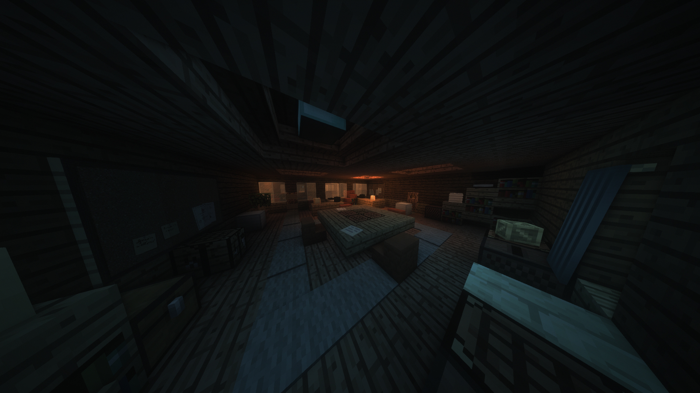

Большая арена пряток - Mount Massive
Арена полностью построена по мотиву лечебницы Маунт Мэссив из игры OutLast, лишь некторые комнаты и нычки придуманы уже мной.
Начал строить я арену ~года 1,5 назад, забросил стройку больше полугода назад. Арена построена на 50%, но уже имеет довольно большое проработанное пространство. Так же с постройкой арены, мне помогал _KventikPro_. Надеюсь данный уровень строительства всё ещё подходит под требования ТК).
Скрины построенных локаций:
Общий план лечебницыСпавн хайдеров
Спавн сикеров (в будке)
 Въезд
Въезд
Передний дворик
Главный холл
 Офис
Помещение с документами
Библиотека
Склад в подвале
Центральное помещение подвала
Пробитая стена ведущая в начальный коридор подвала
Видео раскрывающее все нычки с механизмами, а так же небольшая инфа для продолжения постройки:
Сразу же извиняюсь за дёргание кадров, забыл, что для майна нужно выбрать захват конкретной игрыСсылка на сервер с ареной:
Скачать с Google DriveМожно выцепть мир arena и закинуть в папку saves, но есть шанс, что в мире может что-то поломаться, так-что лучше всё делать через сервер.
IP сервера: 127.0.0.1:25565
Чтобы попасть на арену, нужно прописать /mv tp arena
Чтобы попасть в командный центр, нужно прописать /mv tp cc
Инфа для тех, кто захочет доделать арену:
На арене расставлены фонари и лампы состоящие из стойки для брони и факела, необходимо их заменить на блок головы и запихнуть источник света с помощью плагина AddLight. Это необходимо для оптимизации.
Если дойдёт дело до публикации арены, то пожалуйста припишите строителя VlaGrom и помощника _KventikPro_.
Если возникнуть какие-либо вопросы, пишите мне в дс.